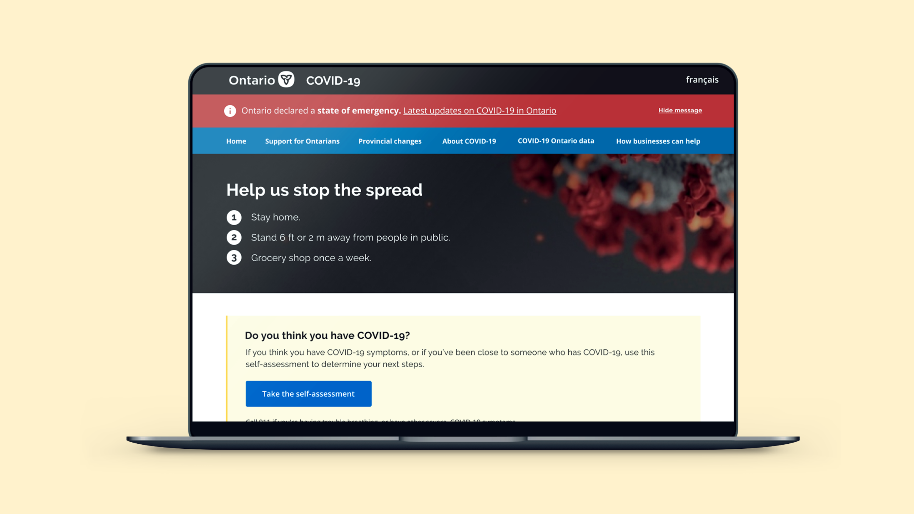
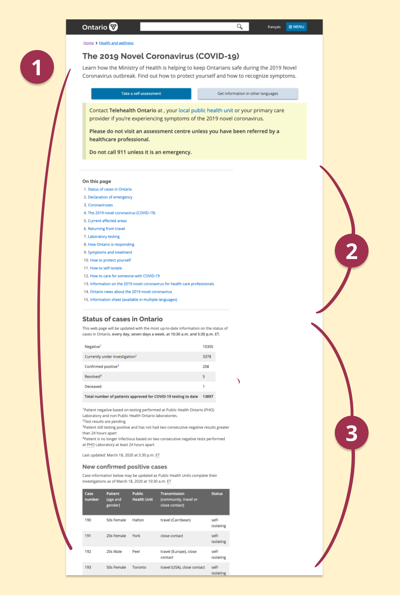
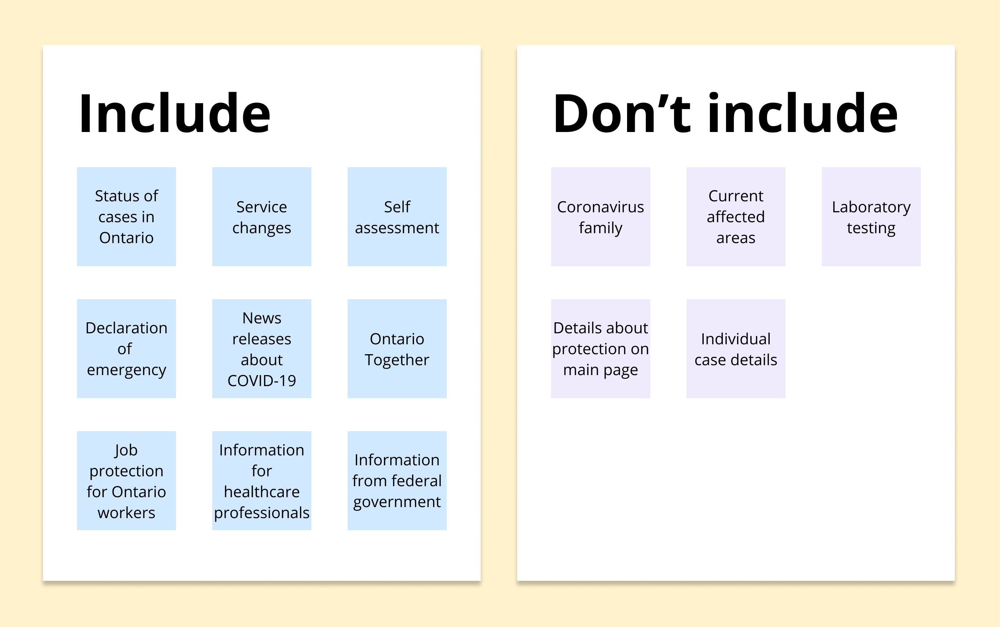
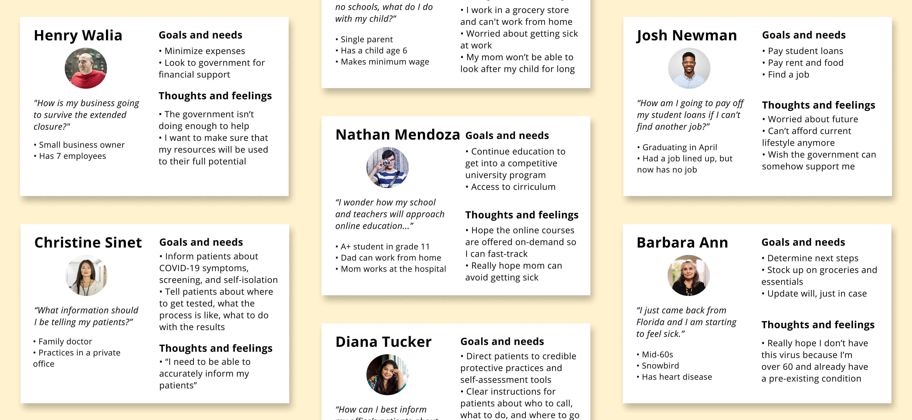
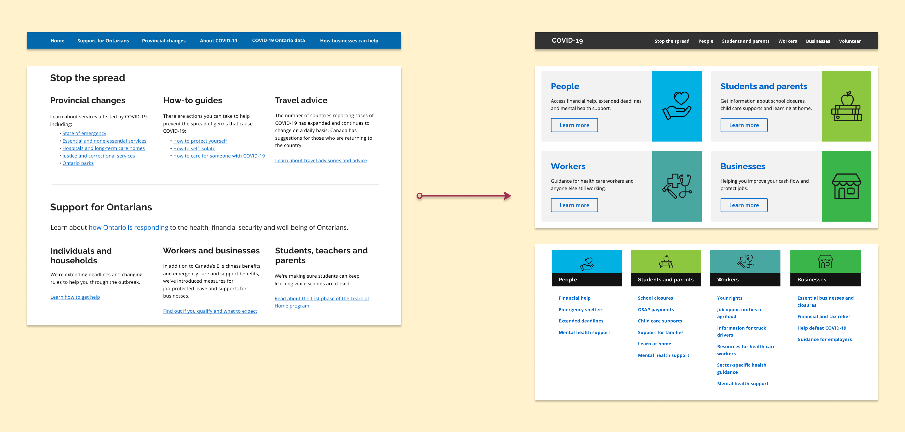
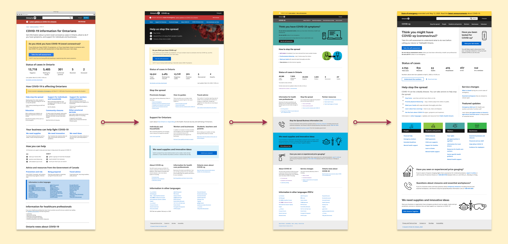
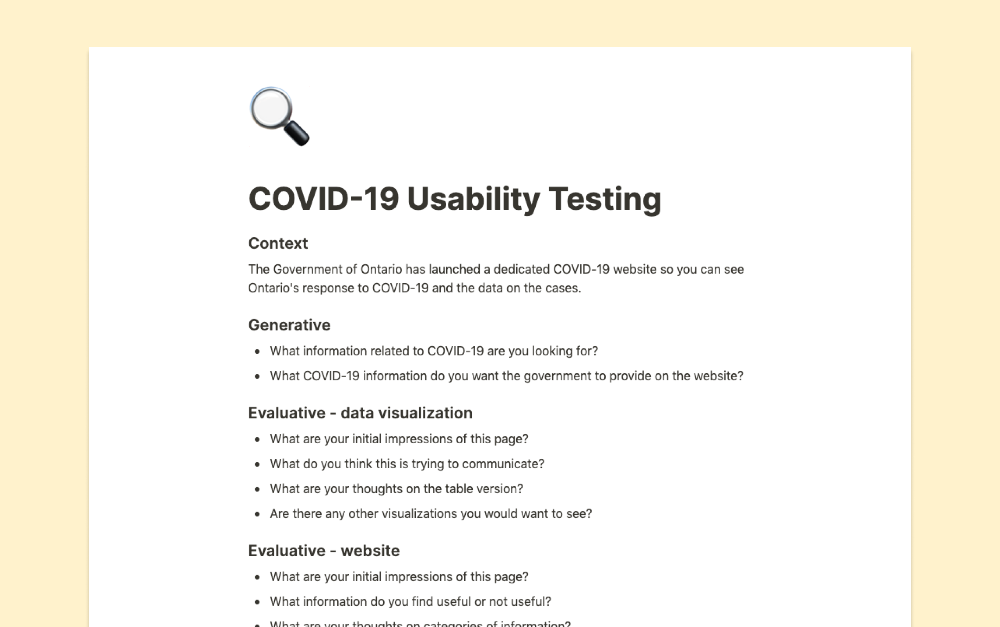
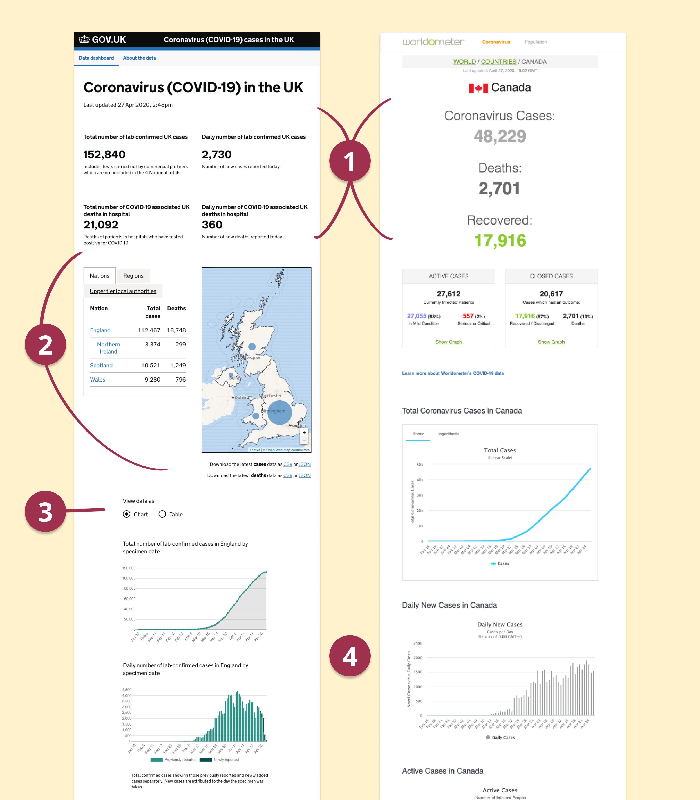
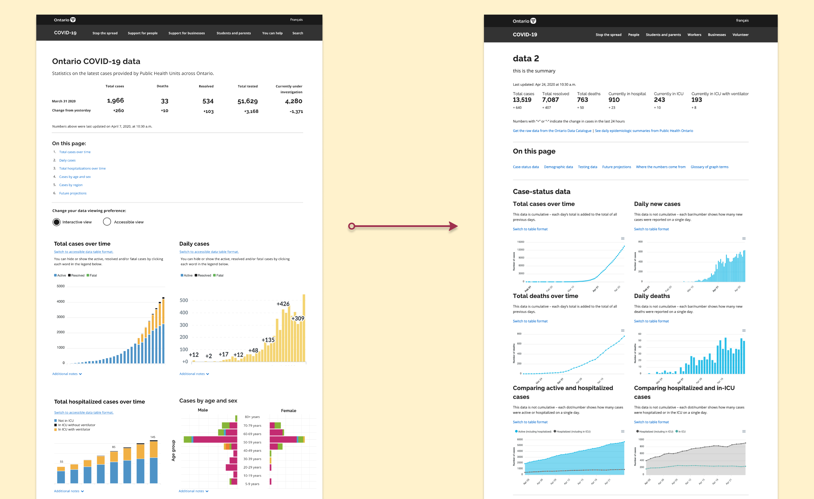
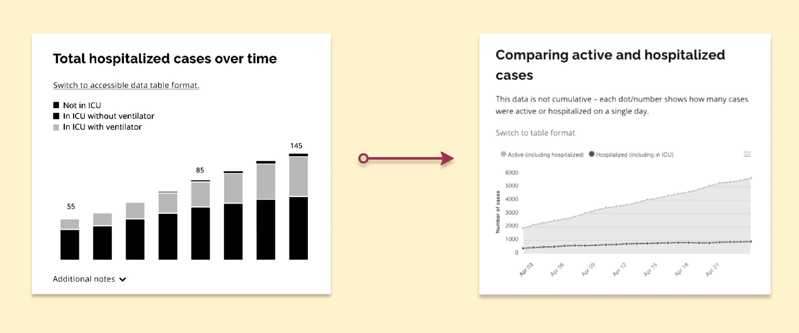

Ontario COVID-19 Website
Empowering Ontarians with the COVID-19 pandemic information

Timeline: March - April 2020 (6 weeks)
Role: Designer in a team of 6
Tools: Figma, Balsamiq, React.js
Skills: UX design, user testing, data visualization
During my internship at the Ontario Digital Service as a product designer, the COVID-19 pandemic struck. As part of the prototyping lab, our team was pulled in to tackle the Ontario government’s delivery of information regarding COVID-19, including the visual and content design. The initial engagement was 3 days in a team of 6 designers. Later on, I was on a team of 3 doing usability testing for the live website and reporting research insights.
You can visit the most recent version of the website and data visualizations at covid-19.ontario.ca.
the problem
Ontarians can’t find what they are looking for
With the COVID-19 outbreak, there has been information overloading Ontarians from all directions. They have difficulty identifying the important information they should know. This was particularly true on the initial version of Ontario’s COVID-19 site:

- The page was extremely long. (The image shown isn't even a third of the whole page!)
- It was densely packed with information; the entire page was text with limited visual elements, making it difficult for Ontarians to find and understand the content they need.
- The data presented had many technical nuances.
As the Ontario government, we should ensure that Ontarians are easily finding the information they need during these unprecedented times. Our team recognized the importance of a user-friendly website for Ontarians and set out developing one.
How might we empower Ontarians with knowledge regarding COVID-19 by streamlining our information and resources in a digestible way?
creating a pitchable prototype
Designing a one-stop shop for Ontario COVID-19 information
Due to the urgency of the situation in early March, we had three days to complete a pitchable MVP. By creating this prototype, we would accomplish:
- Convince executives of the need for an informative and easily digestible COVID-19 page for Ontarians.
- Create a roadmap and first draft for the team that will develop and refine the live website.
I analyzed the information architecture of the existing COVID-19 page, and sorted the content into two piles – to include or not to include. This is because a lot of the existing content was irrelevant to the typical Ontarian; it was either too technical, or heavily repeated material that made the page difficult to decipher.

I suggested we develop a multitude of user personas to help us step into the shoes of different Ontarians and comprehend how COVID-19 affects them. By going through this exercise, we found content that was missing on the original site that should be included to help support people during these trying times.

We chose to create a branded and dedicated platform for COVID-19 on Ontario.ca. The different user groups of Ontarians allowed for the natural implementation of tabs and groupings throughout the page. This allowed us to target content towards different audiences and what they would want to know.

Our lab leader pitched the original prototype and the microsite to executives. Thankfully, our ideas got approved! We handed the project off to another team of developers and designers to build the live site. It was a huge success, we received:
1.25 million
views in one week after launch

continuing to learn after launch
People across Ontario wanted to know more
We knew we had to understand how people were perceiving the live website. I had the opportunity to conduct usability testing of the website in a team of three. We tested the live website, and future iterations that the development team was working on at the time. I helped to recruit diverse users from all over Ontario, took notes during interviews, and facilitated over 8 interviews.

The most prominent and recurring feedback we heard was that Ontarians want to see how the virus is affecting their local area. When asked how to visualize this information, they referred to data visualizations such as heatmaps or interactive charts.
Often, this led to users wanting to see other information such as:
“Are we flattening the curve?”
“How many hospital beds are there? Are we close to reaching capacity?”
“What do the future projections look like?”
Ontarians wanted to see numbers and figures from a reputable source like the Ontario government.
We took our findings back to the team working on the website where they further iterated upon the design and content presented. We got enough feedback regarding the lack of data on the site and started to work on a data visualization page.
prototyping new features
Visualizing the essential data in accessible ways
Before putting pencil to paper, we looked at a variety of data visualizations currently live, including gov.uk, and worldometers.info. In both of these sites, there was common elements that we wanted to showcase in our own page:

- There are “big numbers” above the fold to highlight the important statistics.
- gov.uk included a jurisdictional breakdown of the cases on both map and table formats.
- gov.uk has the information presented in both graph and table formats to allow for accessibility and screen readers to easily relay the information shown.
- Both included large charts that focused presented the information minimalistically while still including descriptions as necessary.
We created the data visualizations in Figma, and then in React.js using Apex Charts. Working quickly, we arranged multiple usability tests to iterate on the design.

From testing, I learned that we had to keep accessibility in mind. A user who is colourblind brought to our attention how difficult it was for them to differentiate the items being compared since we relied on colour to separate items on the same graph.
Having never worked with data visualizations before, I found resources to help me learn how to present data in the best way for many to understand. I used Sarah Fossheim’s introduction article and Keen.io’s guide.
The two main things I learned was to not rely on colour as a way to differentiate between items on a graph and to provide labels where possible, as well as to limit the items being presented to a minimum.

After multiple rounds of iterations and more user testing, we had developed a set of visualizations that were ready for launch as of April 2020.
reflecting back
Designing for unprecedented times
These really were difficult times for many Ontarians. I spoke with individuals from across Ontario, hear their unique stories, and learn how I can help. Each interview showed me how difficult it is to design a website meant to be accessible since the COVID-19 pandemic affects everyone. I am honoured to have had the opportunity to help design a resource that many can turn to in these times of need.